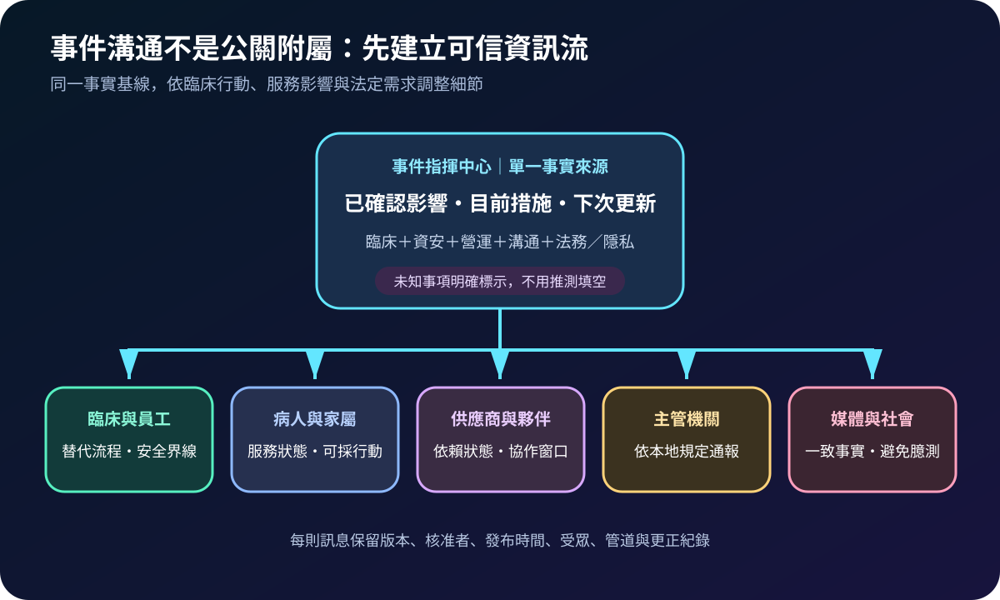
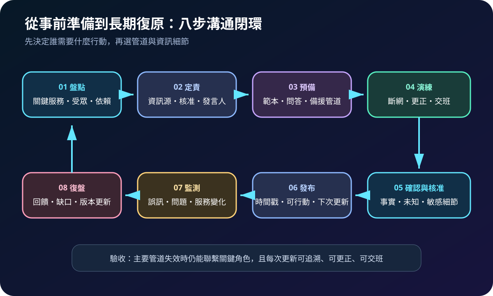
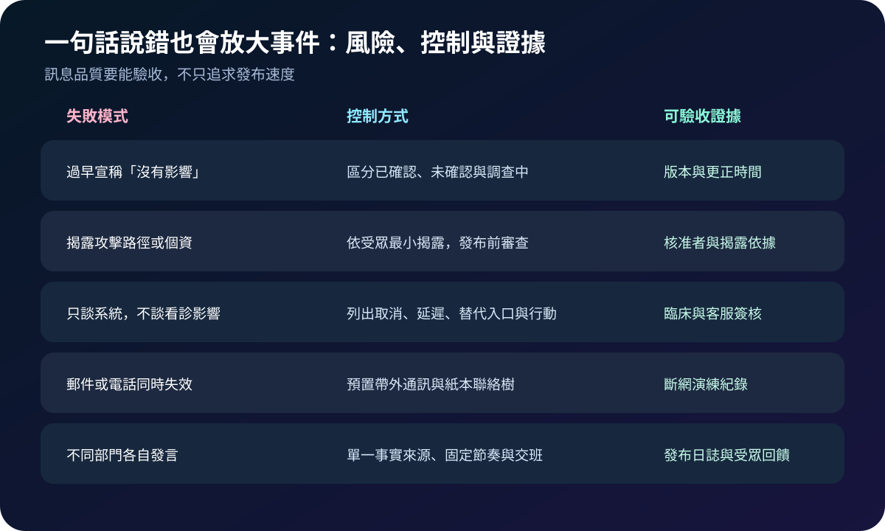

醫療資安國際觀察 · 2026-09-08
醫療資安事件如何持續溝通：從單一事實來源到備援管道
作者：Dr. William｜醫療資訊與資安治理實務工作者
醫療資安事件發生時，電子郵件、電話、掛號與內網可能同時不穩定。溝通若慢於服務變化，臨床人員無法安全降級，病人也可能依過期資訊行動；因此，訊息產製、備援管道與更正紀錄都應納入事件控制。
名詞解釋：事實基線、暫行聲明與帶外通訊
單一事實來源是事件指揮中心維護的最新確認資訊；暫行聲明是在細節未明時，先交代已知影響、正在採取的措施與下次更新時間；更新節奏是預先約定的發布頻率；帶外通訊則使用不依賴受影響系統的電話、訊息平台、廣播或紙本聯絡樹。這些工具不能取代通報義務，但可避免技術調查與臨床行動失去同步。
國際現況與適用邊界
美國 CISA、FBI 與國際夥伴於 2026 年 9 月 2 日發布服務中斷溝通指引，涵蓋網路攻擊、人為錯誤、設備故障及天然災害，強調清楚、可問責、透明及符合受眾需求，並要求預想電信服務不可靠的情境。英國 NCSC 指引則要求事前定責、準備範本、建立替代管道、避免過早斷言，且明確指出醫療機構應說明取消看診等真實影響。NIST SP 800-61 Rev. 3 將事件回應置於整體風險管理週期，而非只在事故發生後啟動。
法域與效力：CISA、FBI、NCSC 與 NIST 資料屬美國及英國的官方指引，不是台灣醫療機構的法定通報時限或揭露格式。台灣機構可採用其溝通架構與演練方法；實際通知對象、期限、個資揭露及醫療服務公告，仍須依本地法規、主管機關要求與事件事實核定。
規劃：以臨床行動反推訊息需求
先列出急診、門診、住院、檢驗、影像、藥事、轉診及病人入口的中斷情境，再為員工、病人、合作院所、供應商、主管機關與媒體定義最低資訊。角色至少包含事件指揮、臨床、資訊、資安、營運、客服、公共關係、法務及隱私。驗收指標可採首次確認時間、核准耗時、準時更新率、備援聯絡成功率、錯誤更正時間及受眾問題閉環率。

實作：讓每次更新可行動、可追溯
- 建立訊息欄位：固定寫明時間、受影響服務、目前可用替代方式、病人或員工應採行動、未知事項及下次更新。
- 分離核准層級：一般服務更新走快速路徑；涉及個資、歸因、勒索談判或執法資訊時，啟動法務、隱私與調查審查。
- 預置備援管道：保留離線聯絡清冊、替代電話、外部狀態頁及跨院協作窗口，並測試身分確認與權限撤銷。
- 保存訊息證據：記錄版本、來源、核准者、發布時間、受眾、管道與更正原因，支援交班、調查與復盤。
- 演練訊息變化：模擬服務範圍擴大、復原時間延後、個資影響尚未確認及主通訊失效，檢查是否仍能一致更新。
風險：透明不等於即時公開所有細節
過早保證沒有資料或病人影響，後續更正會損害信任；揭露尚未封堵的攻擊路徑，又可能妨礙調查與遏止。只發布技術狀態而未交代替代看診方式，無法支援病人行動；只準備電子郵件，也可能在身分或郵件系統失效時完全失聯。控制原則是清楚標示未知、提供可採取行動、限制敏感細節，並維持固定更新節奏。

可執行清單
- 事件指揮中心是否有可交班的單一事實來源？
- 每則更新是否包含時間、影響、替代方式、行動與下次更新？
- 臨床、病人、供應商、主管機關及媒體是否各有聯絡責任人？
- 郵件、電話或內網失效時，是否仍有經驗證的備援管道？
- 範本是否避免未經證實的歸因、復原時間與「沒有影響」保證？
- 發布、更正、核准與受眾回饋是否完整留存並定期演練？
來源
- CISA、FBI 與國際夥伴｜Communicating Under Pressure: Best Practices for Service Providers（發布：2026-09-02；查閱：2026-09-08）
- UK NCSC｜Guidance on effective communications in a cyber incident（發布：2024-10-16；查閱：2026-09-08）
- NIST｜SP 800-61 Rev. 3, Incident Response Recommendations and Considerations for Cybersecurity Risk Management（發布：2025-04；查閱：2026-09-08）
內容說明
本文依健康台灣深耕計畫相關治理內容整理，並參考 CISA、FBI、NCSC 與 NIST 公開資料，提出台灣醫療機構可採用的事件溝通、備援通訊與證據驗收框架；不取代主管機關公告、法律意見、個資事件判定、執法協調或個案臨床決策。